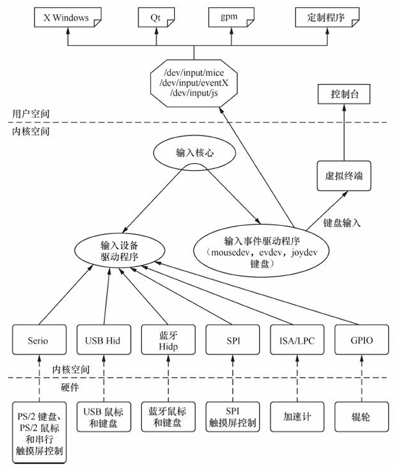
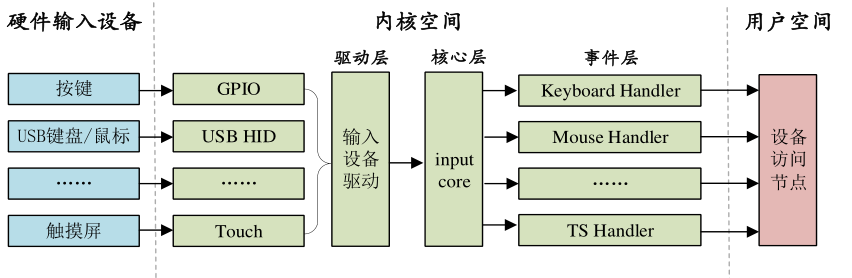

15 input子系统
input子系统
input子系统简介
input子系统和pinctl、gpio子系统一样，都属于Linux内核中驱动开发框架的一部分。input设备是代表了一类设备，比如按键、鼠标、触摸屏等等。
这些设备本质还是字符设备（在核心层注册了
cdev并封装了I/O操作接口），不过又套了层input框架，可以向内核传递输入事件，除了input子系统外，这些设备的驱动中，什么中断、iic之类的该写还是得写
内核在启动的时候就自动帮我们创建了该类字符设备（主设备号为13）sys/class/input及其设备节点dev/input，后面我们如果要添加新的input设备，则需要将自己的设备注册到该子系统中，而不必创建新的class和device了
input子系统层次结构

input子系统分为3层：
- 驱动层：输入设备的具体驱动，比如按键的驱动，负责IO、中断等资源的初始化，向核心层报告输入内容
- 核心层：给驱动层提供注册input设备和操作的API，并通知事件层对输入进行处理
- 事件层：主要与用户空间交互
我觉得input子系统的好处是：将具体的输入设备和用户层之间搞了层抽象，用户层的代码不用读具体的输入设备，而只用关注input子系统这个中间层就行了，后续如果更换硬件输入设备，用户层也不用改代码
核心层
核心层会向Linux内核注册input子系统的字符设备类/sys/class/input，它位于drivers/input/input.c
在核心层创建了input类后，我们才能使用input子系统，只需要向该类注册input设备即可
input驱动编写流程
input子系统的在驱动层中，设备的注册流程大致如下：
- 使用
input_allocate_device申请一个input设备 - 初始化申请的input设备，设置需要的事件类型等
- 使用
input_register_device把input设备注册到input子系统中
注意事项：
1.在完成input设备的注册后，会生成一个设备文件/dev/input/eventX（X=0…n），代表输入的事件，后续在用户层的代码中读取这个设备文件即可获得输入事件。可以用hexdump /dev/input/eventX来对input设备进行简易测试
2.卸载input设备时，需要先input_unregister_device，再input_free_device
核心数据结构
input_dev：代表一个待注册的input设备，包括了此输入设备支持的输入事件类型evbit，以及具体的事件xxbit的哪些值，比如要限定读取按键中KEY_0的值，就需要设置keybit中KEY_0那个bit
1 | struct input_dev { |
evbit的支持的类型如下：
1 |
keybit所支持按键值如下：
1 | #define KEY_RESERVE 0 |
核心API
1 | struct input_dev *input_allocate_device(void); // 申请一个input设备 |
初始化input设备的方法
1 | /*********第一种设置事件和事件值的方法***********/ |
事件的上报
只是向input子系统注册一个设备其实并没有用，因为input设备的核心是上报输入事件给内核。我们在驱动层通过中断等操作感知到输入后，需要将输入类型和值进行封装，接着需要调用API来把这个输入事件上报给内核
核心API
1.通用上报事件
1 | void input_event(struct input_dev*dev, unsigned int type,unsigned int code,int value); |
- dev：需要上报的 input_dev
- type: 上报的事件类型，比如 EV_KEY
- code：事件码，也就是我们注册的按键值，比如 KEY_0、KEY_1 等等
- value：事件值，比如 1 表示按键按下，0 表示按键松开
Linux由通过对该函数进行封装，提供了一些其他的上报具体事件的API，比如：
1 | void input_report_key(struct input_dev *dev, unsigned int code, int value) |
2.同步事件
上报完后，需要向Linux内核说明事件上报完成，让其将事件同步给用户层
1 | void input_sync(struct input_dev *dev); |
核心数据结构
input子系统使用input_event这个类代表上报了的事件，用户层读取input子系统设备得到的结果也是该类
1 | struct input_event { |
- type：事件类型，比如 EV_KEY，表示此次事件为按键事件，此成员变量为 16 位
- code：事件码，比如在 EV_KEY 事件中 code 就表示具体的按键码，如：KEY_0、KEY_1等等这些按键。此成员变量为 16 位
- value：值，比如 EV_KEY 事件中 value 就是按键值，表示按键有没有被按下，如果为 1 的话说明按键按下，如果为 0 的话说明按键没有被按下或者按键松开了